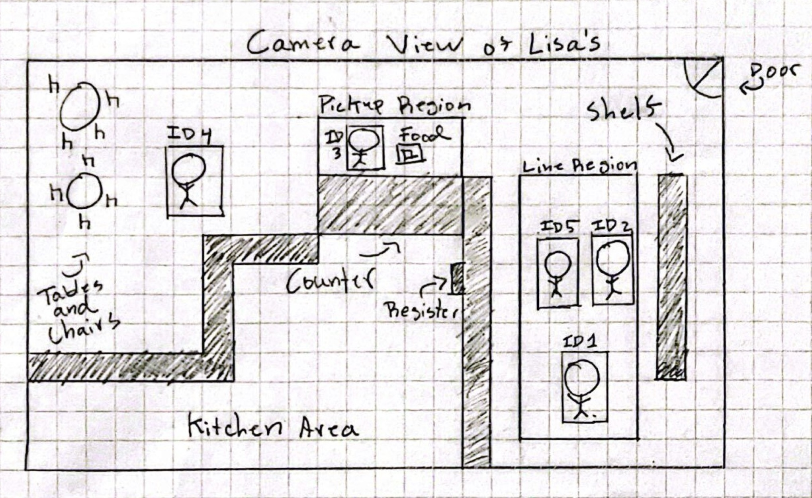
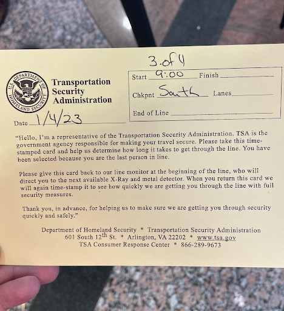
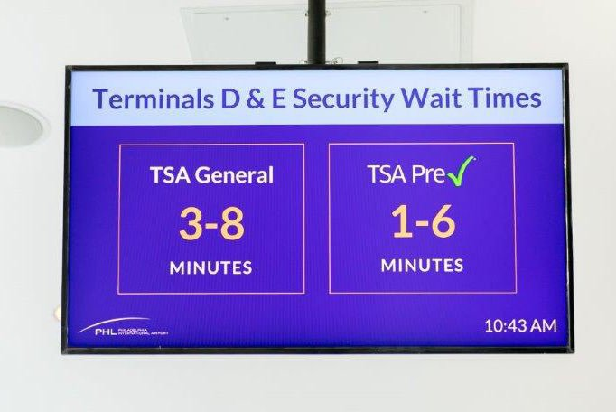
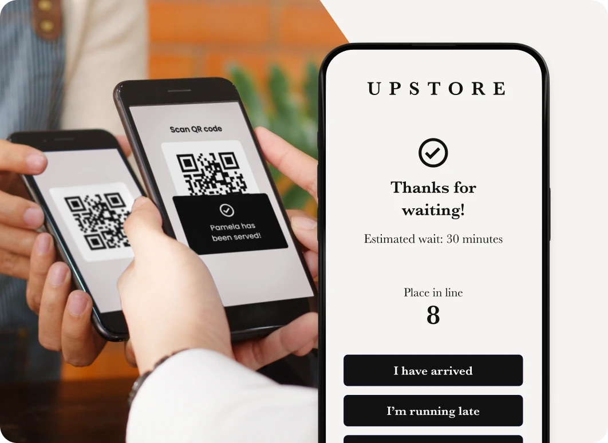
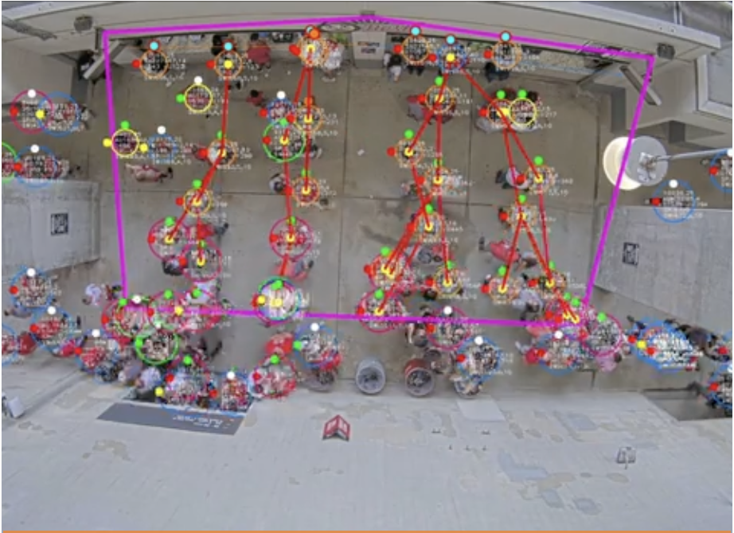
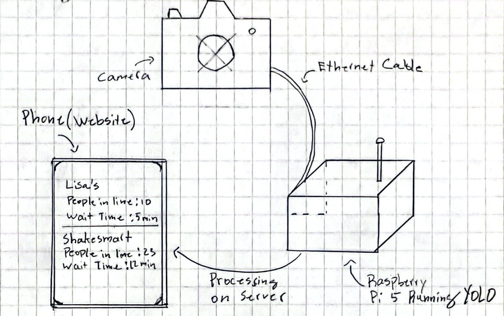

NU Waitime
June 5, 2026
Submitted By Colton Kelly, Kit Rady, Adrian Salonga, Charles Tang
Section 33 Team 04
Design Thinking and Communication Program
Professors Skwish and Coney
McCormick School of Engineering and Applied Science
Northwestern University
Evanston, Illinois 60208

Table of Contents
Camera and Physical Design/Constraints
YOLO Data Processing/User Interface
Universal Studios Park Queue Time Tracker
Wireless Wait Time Communication System
Toyota Points-of-Interest Wait Time Prediction System
Transportation Security Administration (TSA)
Install and Configure the AWS CLI
List of Figures
Fig. 1. An image of the Waittime website.
Fig. 2. A sketch of the layout of Lisa's.
Fig. 4. Televisions displaying TSA wait times.
Fig. 6. WaitTime’s Queue Algorithm for un-structured queues.
Fig. 10. Mockup of wait-time estimation tool.
Fig. 11. Example of a Heat Sensor.
Fig. 12. A QR code that links to the NU Waittime website.
Fig. 13. Safety Risk Scenarios.
List of Tables
Table 1. Components and Benefits of NU Waittime.
Table 2. Meal Exchange Locations and Hours.
Table 3. Lisa’s Cafe Main Complaints.
Executive Summary
Problem
Students at Northwestern University face a lot of frustration when waiting in lines at meal exchange stores. The source of this frustration comes from the total wait time of the lines, the unpredictability of the wait times, and the noise of the stores.
Purpose and Scope
Our purpose is to reduce the frustration students feel when waiting in lines by informing them of the estimated wait time at each store. The goal of this is to give students more information about where they should eat at any given time. By doing so, this should limit the wait times at stores when they are at their busiest.
Methodology
We interviewed students who frequently go to Lisa’s Cafe, a meal exchange store, to hear about what their main complaints were (See Appendix A). Then, we conducted background research on patents and companies with similar designs (See Appendix B and Appendix C). We used this research to create four mockups before moving forward with a camera monitoring design (See Appendix D).
Design
We trained a modified version of the YOLO Object Detection to recognize food from Lisa’s Cafe. It can recognize when food is in the defined “pickup zone” and when people are in the defined line. We track each person as they travel the line and receive their food, and use that total time as an estimate for the current wait time at a store.
| Components | Benefits |
|---|---|
| Camera | 132 degree viewing angle wide enough to view entire line in a store |
| YOLO Data Processing | Algorithm that can identify people in line and food being received |
| Website | Website makes number of people and estimated time easy to view |
Future Development
In the future, we will use a Raspberry Pi or similar laptop to stay connected to our camera when we are not present and train our algorithm with more pictures.
Introduction
At Northwestern University, there are various places on campus outside of the dining halls. On the north side of campus, Lisa’s Cafe offers Mexican food during the evening. In Norris, many options are available during class hours, from sandwiches to pizza to acai bowls. On the south side of campus, Fran’s Cafe offers burgers and chicken tenders during the evening. Some of these stores have food that can be purchased using “meal exchanges”, which are part of several of the university’s meal plans. Due to offering consistent options and quality of food, these stores are very popular among students for eating all meals.
The main issue students face is the unpredictability of the wait times at these stores. Meal exchange stores either have daytime hours (8am to 6pm) or nighttime hours (6pm to 1am). Most classes end at the 50 minute mark of every hour. This causes many students to rush to Norris to eat around the same time (See Appendix E). As a result, stores can go from not very busy to packed in a matter of minutes. Students typically organize their schedule in such a way that they only have 30 minutes to an hour to eat their food. If students arrive at their favorite store too late, they may be unable to get their food before their next class. At night, Lisa’s Cafe and Fran’s Cafe are very popular for a late night snack. However, fraternity parties, K-dance performances, and various other events around campus make the wait times at these places unpredictable from hour to hour. As a result, students may make a long walk to one of these stores only to find the line is too long for the walk to be worth it.
Our mission is to reduce the frustration students feel when waiting in line at meal exchange stores. Ideally, our design reduces the wait time of the lines and gives students a better sense of how long they will wait for their food. The following sections describe the user in more detail, the components of the final design, and future developments that could enhance the design.
Users and Requirements
Main Users of the Design
Northwestern Students
A majority of the students interacting with our design are first and second year students. Many students only section off one hour of their day to eat their lunch and walk to class. Depending on the wait time of each store, a student might not have enough time to order their food and make it to class on time. At nighttime, nearby fraternity parties or club events can bring in many people during otherwise normal hours. The extra commotion this causes can make waiting for food extra unpleasant for some, especially after a long day of studying. These students would interact with the design by watching the live feed of the stores to see if there are a lot of people eating and approximately how long it would take them to receive their food.
Secondary Users
Meal Exchange Stores Staff
The staff at these stores would not directly interact with NU waittime, but they would appear on camera and must be recognized by our system so NU waittime knows when food has been received by the customer. Even though the workers would not interact with the product, they still would benefit from our design, as students would likely go to other meal exchange stores if the line was too long (See Appendix A). Below is a table of all of the meal exchange locations and their hours.
| Name | Location | Hours |
|---|---|---|
| 847 Burger | Norris | 8:00am - 6:00pm |
| Buen Dia | Norris | 8:00am - 6:00pm |
| Forno Pizza Co. | Norris | 8:00am - 8:00pm |
| Shake Smart | Norris | 8:00am - 6:00pm |
| Wildcat Deli | Norris | 8:00am - 6:00pm |
| Fran’s Cafe | Willard Residence College | 6:00pm - 1:00am |
| Lisa’s Cafe | Slivka Residence College | 6:00pm - 1:00am |
Major Requirements
Line Information
Students with class must know how long the lines are to decide if they have the time to eat at a certain store or not. Also, the number of people in the store can be equally important to know if a store has a quiet atmosphere or a loud one. Our design must accurately record both the wait time and the number of people.
Accessibility
Any student interested in purchasing food must have access to the wait time estimate and number of people in line. That means the information is both free for every user and must be quickly found online for everyone (See Appendix F).
Privacy
Because we are tracking when students are picking up their food, there is inevitably some concern over if students’ privacy is being protected. Our design must not collect data about students or footage showing students ordering food (See Appendix G and Appendix H).
More information about the requirements can be found in Appendix I.
Design Concept and Rationale
Camera and Physical Design/Constraints
Our physical system consists of a Real Time Streaming Protocol (RTSP) Internet Protocol (IP) Power-over-Ethernet (PoE) camera, a PoE injector, and Ethernet cables. The camera needed to have RTSP and IP enabled because without it, we would not be able to track the line in real time via the Internet, which was necessary for our algorithm (outlined below) to work. We chose to use a camera with PoE capabilities because PoE’s basic function is to both power and connect the camera to the Internet via Ethernet cable. Additionally, using a PoE camera allowed us to bypass any apps that the camera companies maintained once we set up the camera. This was important because ethically speaking, we did not want to store a video recording of anyone in the cloud, in an app, or locally on a drive. Furthermore, using PoE ensured that we would not have any trouble connecting to the camera because the camera would be able to stream to the laptop without needing to be connected to the same wireless network as the laptop. We also made sure that our camera was wide-angle so that we could accommodate the layout of Lisa’s or Shakesmart. Lisa’s has pillars obstructing view of the line at some points, which would have made it more difficult to position the camera if the camera was not wide-angle. The Shakesmart line ends at an angle, which means to have all of the line in the camera’s view, it has to be placed at a certain spot in the open layout of Shakesmart, which would not be possible to achieve without a wide-angle camera.
YOLO Data Processing/User Interface
Our team decided to use the You Only Look Once (YOLO) models for their computer vision capabilities since they provide trained models that can track and identify people. Our program works by using the YOLO models to analyze each frame uploaded to the laptop, or other edge device. To begin, we use YOLO’s QueueManager class to count the number of people standing in an area we define as the line region. This count is used to identify the number of people in line.

To calculate the wait times, every person in the frame is tracked and given an ID using YOLO’s ByteTrack algorithm. When a person enters the line region, the time of the event is recorded and associated with the person’s ID. Later, when that same person triggers a pickup event inside an area we define as the pickup region, the time of the event is also recorded. We define a pickup event as when the person’s wrist (tracked using YOLO’s pose model) enters the pickup region and is within 100 pixels of a food order, which we fine-tuned the model to identify. The difference between the two times is considered a completed wait time, and the estimated wait time is the average of all the completed wait times recorded in the last five minutes.
Since the YOLO algorithm is still able to recognize people who move behind objects that obstruct them from the camera’s view, the program can run accurately. Our algorithm also limits inaccuracies by ensuring that people standing in line who do not order are not counted into the estimated wait time: only people who pick up an order are factored into the wait time.
This estimated wait time, as well as the number of people currently in line, is then uploaded to our website hosted on AWS’s CloudFront. Users can access the website by typing the URL into their browser or by scanning our provided QR code.
Future Development
Raspberry Pi
Currently, our design uses one of our personal computers to track the people in line due to time and money constraints (See Appendix J). This means for NU Waittime to work, one of us must be present at a store at all times. In the future, we would have a computer we can leave at a meal exchange store at all times. A Raspberry Pi would be the cheapest way to achieve this.
Better Detection Algorithm
Our tracking algorithm works by testing whether a user’s wrists appear in the “pickup zone”. However, this does not account for the depth of where the user is. To clarify, a person could stand in front of the pickup zone and be registered as receiving their food, even if they are not in the zone. In addition, the model could be trained more to better detect food from meal exchange stores. Currently, the algorithm has been trained using 100 different pictures of food from Lisa’s Cafe. This is not enough for the camera to consistently recognize the food. In addition, people’s hands are commonly mislabeled as food, creating false positives that would affect our data. In the future, our model would be trained with more pictures and with food from other stores.
User Testing
Our design will primarily be tested in Lisa’s Cafe, a nighttime hour store in the North Campus of Northwestern University. Due to its location near fraternity houses and its late hours, the flow of people will be different than it will be in other stores. Thus, it's possible our design will perform differently in different stores. In addition, it's important to find out where our design would need to be placed in each meal exchange store. Our current design may not accommodate the layout of every store. In future developments we would further look into these questions.
Conclusion
To summarize, our design meets the needs of Northwestern students by informing them of the average wait time and number of students in meal exchange stores. Our prototype accomplishes this using:
- Camera with 132 degree viewing angle and 98 ft range
- YOLO image processing
- Convenient website for students to access the line data
Students shouldn’t have to guess if they have time to eat their food or not. With our design, there is no more mystery in how long students have to wait.
Anyone hoping to implement this system in a store near them can build this for $93.48 in around 10 hours (See Appendix K).
References
[1]“Northwestern SSO,” Northwestern.edu, 2026. https://www-webofscience-com.turing.library.northwestern.edu/wos/diidw/full-record/DIIDW:2021931371 (accessed Jun. 03, 2026).
[2]“Northwestern SSO,” Northwestern.edu, 2026. https://www-webofscience-com.turing.library.northwestern.edu/wos/diidw/full-record/DIIDW:201668159R (accessed Jun. 03, 2026).
[3]“Northwestern SSO,” Northwestern.edu, 2026. https://www-webofscience-com.turing.library.northwestern.edu/wos/diidw/full-record/DIIDW:2021B2157P (accessed Jun. 03, 2026).
[4]“Northwestern SSO,” Northwestern.edu, 2026. https://www-webofscience-com.turing.library.northwestern.edu/wos/diidw/full-record/DIIDW:202523611L (accessed Jun. 03, 2026).
[5]“Northwestern SSO,” Northwestern.edu, 2026. https://www-webofscience-com.turing.library.northwestern.edu/wos/diidw/full-record/DIIDW:2022E87482 (accessed Jun. 03, 2026).
Appendix A: Problem Definition Research
Lisa's worker
- Short-staffed
- Hard to keep people
- Lots of campus stores are odd, unappealing hours
- Lots of campus workers don’t live around here, are from far, like south side, west side, far north
- When they are hired for Lisa's specifically, aren’t told how loud and how crazy it is, and just generally aren’t told much about the actual job, and they find they can’t handle it
- If they find a job with morning/day hours, will try and get that opportunity
- All this combines to make it hard to keep people
Things Kit notices
- Quesadillas take forever to make
- Wait times get really long at night
- Line gets really long at night (can’t even purchase stuff without waiting)
- Don’t know how long until your food is ready, kinda wastes your time (can’t leave because what if your food is ready while you are gone)
Interviewee 1
- Really unpredictable, decide to gamble on whether line will be short enough to justify going
- Quesadillas too slow
Interviewee 2
- Really unpredictable, decide to gamble on whether line will be short enough to justify going
- Lines so long you don’t think its worth it
- Quesadillas too slow
Interviewee 3
- Wants it applied to stuff to norris, don’t want to walk all the way to norris just to see giant line
Interviewee 4
- Waiting in line is annoying and too long, so just by sandwich instead of waiting for food bc still need to eat
- Quesadillas too slow
Interviewee 5
- If Lisa's line is long enough, just go to frans (frans is better food, so if line is long enough its the same)
- Quesadilla takes too long, only thing they like
- Wants to separate dining dollar and meal exchange lines
- Wants to post wait times or count ppl in line
Interviewee 6
- If Lisa's line is long enough, just go to frans (frans is better food, so if line is long enough its the same)
- Norris lines get INSANELY long, especially between class
- Norris is closest food often between classes
- Lose time in your day
- No way to tell before you show up
- Nice to know if they have specific item
Interviewee 7
- Very high traffic during certain hours
- Sometimes predictable, sometimes not
Interviewee 8
- Sometimes waits 25+ minutes even when ShakeSmart line only has a few people
| Identifier | Complains About a Specific Item | Would Eat Elsewhere | Unpredictable Length | Other |
|---|---|---|---|---|
| Interviewee 1 | x | x | ||
| Interviewee 2 | x | x | ||
| Interviewee 3 | x | |||
| Interviewee 4 | x | x | ||
| Interviewee 5 | x | x | x | |
| Interviewee 6 | x | x | x | x |
| Interviewee 7 | x |
Appendix B: Patent Research Summary
Section 33 with Profs. Kelly Coney and Andrew Skwish
Team 4 Members: Colton Kelly, Kit Rady, Adrian Salonga & Charles Tang
Date Written: May 6, 2026
Background
In our white space project, our group decided to pursue a way to estimate wait times at the lines at meal exchange stores here at Northwestern. Naturally, one source of information to base our Northwestern version off of would be patents. Some solutions are entire sensor systems made for amusement parks attractions that display wait times, with directions to said attractions. Others are cellular-based location tracking programs that can tell how long a car is parked at an establishment, like a restaurant or parking garage. These apparatuses will not work for a restaurant full of people, not the way they currently are. We need to find a way to adapt.
Universal Studios Park Queue Time Tracker
This design consisted of processors that could handle multiple inputs and sustain multiple ways to monitor a single queue. After receiving the queue information outputs, that processor would predict how long the wait time would take based on said outputs and transfer that prediction to a display. Below is a flow chart that outlines this process.
Wireless Wait Time Communication System
This patent involves tracking user data and creating an estimated wait time based on a user’s previous actions. First, the user’s device uses a network to send location data. The arrival at said location and the departure from said location are then stored in a memory device. The algorithms then calculate predicted and baseline values for the number of times going to that location. Wait time is then calculated based on the arrival time, and the algorithm also calculates the line exit time based on the wait time.
Toyota Points-of-Interest Wait Time Prediction System
Toyota uses GPS at points-of-interest to determine wait times at these locations. The processor determines the current and historical occupancy in the area. Then, the processor runs an algorithm to determine the current and future waiting time at this point of interest, which is then output onto a user interface device.
Appendix C: Competitive Benchmarking Research
Charles Tang
DTC-2 Section 33
Professor Coney and Professor Skwish
May 28, 2026
After completing initial patent research, our team conducted market research. We began by identifying organizations that display line wait times, such as Disneyland, the TSA, and Chick-fil-A. Many companies, however, do not disclose their methods for estimating wait times. So, we analyzed online forums and discussions and were able to identify how some of these companies solve the problem. Additionally, our team also researched companies that provide services for estimating wait times. By looking through their websites, we were able to discover their general approach. Market research helped inform our team of current solutions, and how they solve each aspect of the problem.
This report presents three companies and summarizes the information available on how they calculate estimated wait times.
Transportation Security Administration (TSA)
The TSA tracks and displays the wait times for its security checkpoints in airports. They estimate these wait times in a couple different ways.
- Every hour, cards are given to people entering the line, and later returned to TSA officers at the end of the line (Figure 1). So, the TSA can track how long it took one person to go through the line. This information is then displayed on the My TSA app. However, this method does not accurately reflect wait times if line lengths are constantly changing [1]. Two Northwestern students we interviewed mentioned that TSA wait times are inaccurate in their experience, with the actual wait times being much longer than the estimated time.

- The TSA also has an automated system called the TSA’s Automated Wait Time (AWT) system. It utilizes information broadcasted from Bluetooth-enabled devices in the line to calculate wait times. The system works by collecting timestamped, hashed MAC addresses as individuals enter the line and exit the line. The difference in timestamps for each MAC address is then used to determine the wait time [3]. The estimated wait times are displayed on televisions in the terminal and on the My TSA app (Figure 2).

Waitwhile
Waitwhile allows users to join a virtual line by scanning a QR code. The app displays the user’s place in line and their estimated wait time (Figure 3).

Using the number of people in the line, Waitwhile computes the estimated wait time in two ways: Classic and Intelligent.
- With Classic wait time estimation, the algorithm uses the store's inputs to determine the expected wait time for each individual in line. These inputs include historical wait times, the number of active staff, the type of service, and more [6].
- Intelligent wait time estimation uses Waitwhile’s millions of data points to train a machine learning model to learn the patterns in wait times. Each data point contains information related to a visit such as time of day and party size. The model then predicts the estimated wait time based on the number of people in line [7].
Online reviews for Waitwhile are mixed. Many enterprise customers, such as customer service representatives from IKEA, like the software’s ease of use and real time updates. Some small business owners, however, say that the service is too expensive and that the company is unresponsive to emails requesting assistance. One dissatisfied customer, for example, was charged $1,800 for the year [8].
WaitTime
WaitTime uses cameras mounted above queues to interpret crowd conditions in real-time, so organizations know wait times and crowd densities. The system can monitor high volume entry and exits, un-structured queues, structured queues, and density measurements. The product is used by organizations like The Denver Broncos, Ohio State University, and The Miami Heat to understand how crowds are behaving at their stadiums [9].

There are no online reviews for WaitTime since it only serves large enterprise customers.
Conclusion
There are many existing products that track how long wait times are, with solutions ranging from machine learning algorithms to physical cards given to people in line. Based on our research, users are more satisfied with software solutions since they are highly accurate and provide real-time updates. However, most machine-learning services are expensive, so small businesses with only one location are hesitant to adopt them. Our team believes we can learn from existing solutions and improve on them to create a unique, cheap method to track wait times at Northwestern University’s meal-exchange stores. We see an opportunity to make a hands-off product that can help students be more aware of how long lines are at stores like Lisa’s and ShakeSmart.
References
[1] Government Accountability Office, “Aviation Security TSA Uses Current Assumptions and Airport-Specific Data for Its Staffing Process and Monitors Passenger Wait Times Using Daily Operations Data,” United States Government Accountability Office, https://www.gao.gov/assets/690/689896.pdf (accessed Apr. 30, 2026).
[2] sickbandnamealert, “TSA gave me this card to check the length of the line,” Reddit, https://www.reddit.com/r/mildlyinteresting/comments/1037d34/tsa_gave_me_this_card_to_check_the_length_of_the/ (accessed May 4, 2026).
[3] E. Chin, “Automated wait time (AWT) technology DHS/TSA/PIA-037,” Department of Homeland Security,
[4] H. Kanik, “Philadelphia International Airport begins displaying wait times for security checkpoints,” PhillyVoice, https://www.phillyvoice.com/philadelphia-international-airport-security-wait-times-phl/ (accessed May 3, 2026).
[5] “Queue management system: Automated Queue Software,” Waitwhile, https://waitwhile.com/solutions/queue-management-system/ (accessed May 3, 2026).
[6] L. Gagnon, “Classic Wait Time Estimation,” Waitwhile Help Center, https://help.waitwhile.com/en/articles/10048839-classic-wait-time-estimation (accessed May 3, 2026).
[7] C. Kokkinou, “Intelligent wait time estimation,” Waitwhile Help Center, https://help.waitwhile.com/en/articles/9980010-intelligent-wait-time-estimation (accessed May 3, 2026).
[8] “Waitwhile reviews 2026: Details, pricing, & features | G2,” G2, https://www.g2.com/products/waitwhile/reviews (accessed May 31, 2026).
[9] “Waittime products and services,” WaitTime, https://www.thewaittimes.com/products-and-services (accessed May 3, 2026). https://www.dhs.gov/sites/default/files/publications/privacy_pia_tsa_awt_august2012_0.pdf (accessed May 4, 2026).
Appendix D: Mockup Testing Summary
Colton Kelly, Kit Rady, Adrian Salonga, Charles Tang
DTC-2 Section 33
Professor Coney and Professor Skwish
May 18, 2026
Introduction
On May 8, 2026, our team conducted mockup testing with students waiting in line at ShakeSmart. The goal was to understand how students would use live wait-time information for campus dining locations and how they felt about a camera-based system.
Methodology
We showed participants a low-fidelity sketch of a wait-time estimation system, as shown in Fig. 1, and asked short interview questions while they were in line.

These are the questions we asked:
- If you could see the current wait time before going to an on-campus dining location (like Lisa’s or ShakeSmart), would that affect whether you go there?
- Would you use an app that showed live wait times or line lengths for campus dining locations?
- If one dining location had a shorter wait than the one you planned on going to, would you change where you planned to eat?
- Would you trust and use an estimated wait time, or would you prefer to see the actual number of people currently in line?
- Would you feel uncomfortable if a camera recorded the line to count the number of people in line? The video feed and any other identifying information is not stored in any way.
Results
We interviewed Sav, Zach, and Reyan. All three said that live wait-time or line-length information would affect where they go to eat. They mentioned that they would check the wait-time before going to locations like Plex Tacos, ShakeSmart, Fran’s, and Lisa’s.
The participants all wanted both estimated wait time and number of people in line, since they “don’t trust apps that only show wait times.”
All of the participants did not object to a camera-based system after being told that video footage would not be stored. One participant mentioned that most stores already have security cameras, so adding one more wouldn’t make a difference.
Discussion
The testing suggests that students would find live dining wait-time information useful, especially when deciding between dining locations. The main design takeaway is that the interface should show both estimated wait time and current line length.
Introduction
Our team tested four different mockups to determine which was best fit to be our prototype. This testing summary describes a mockup where people in line would be identified using a heat sensor. The goal of our testing is to determine if this would be financially feasible to do, and determine a location where we can place this heat sensor.
Methodology
To find possible choices of a thermal sensor, I searched the websites for Walmart, The Home Depot, and Amazon to find the cheapest options. The reasoning behind sorting by lowest price was because of our budget of $150. Top of the line thermal sensors can go for hundreds of dollars: for a heat sensor to be feasible for us it must be well below this price, especially since we would need to buy other materials to process the data from the sensor. Also, people in line could be identified with a camera using machine learning. This means that not only must the heat sensor be cheaper than $150 (including the necessary ethernet cables and PoE injector), but it also must be cheaper than a camera for it to be worth us investing in a heat sensor instead.
We also must find a place where we can place the sensor. The sensor must have an unobstructed view of both the line of people and the pickup zone. That way, we can track the time from when people enter a line to where they receive their food. We chose to do so in Lisa’s Cafe, because this place is a very convenient location for our team to meet and is perhaps the most unpredictable place in terms of wait time.
Results
On Walmart, I found two sensors cheaper than $100 (one around $50 and the other around $80), but both had ranges far too small to be used to survey a line. The least expensive thermal sensor that fit our needs was around $250, which is far above our budget. On The Home Depot’s website, we found a sensor that was $130, but even that was likely not wide enough to fully encapture the lines at places like Lisa’s Cafe and Shake Smart.
Even though a heat sensor would likely be too expensive to be feasible, we still found it important to find a location in Lisa’s Cafe to place a sensor in case we use the camera mockup moving forwards. We found that a pillar at Lisa’s Cafe could serve as a possible location to set up a sensor or camera, as it is right on the corner where it can see both the line and the pickup zone.
Discussion
Overall, our testing showed that a heat sensor would not be viable for our goal of tracking the wait time at meal exchange stores. However, we were able to find a spot to place one, which may apply to the camera mockup design if we choose to move forwards with that design.
Appendix E: Shakesmart Observation
3:23 Line short when I entered at 3:23 pm
3:28 Received order at 3:28 pm, ordered a shake
3:32 Line gets long at 3:32, going all the way past the information desk
3:36 Person at front of line at 3:32 gets order at 3:36, idk what ordered
3:37 Person by iPads at 3:32 orders at 3:37, gets order at 3:42, also a shake
3:41 Line doesn’t get that much longer at 3:41, some stragglers though
3:41 They release acai bowls for four people all at the same time, 3:41
- Even though they release all at the same time, there isn’t much discrepancy in waiting
3:42 Middle of the line is at the front at 3:42, waiting to scan cards
3:47 Middle of the line gets orders at 3:47
3:49 End of the line steadily approaching at 3:49, again some stragglers after the “end”
- Line is now constrained to just the Shakesmart part of the floor
3:53 Line again resurges to near information desk at 3:53
3:57 iPad to counter time about 5 minutes as well
- The person at the iPad at 3:53 tapped his card at 3:57
4:01 Acai bowl wait time sometimes have significant differences compared to shakes
- Someone that ordered at 3:53 didn’t get his until 4:01
4:02 End of line from 3:53 at front at 4:02, but the line is still just as long
- The line essentially pretends to dissipate
4:22 Line dissipates at 4:22
4:22 Crowd is created while waiting for orders at 4:22
4:28 Line again dissipates at 4:28, new crowd is waiting for orders 4:28
Notes
- Orders still come out from scanning card to hands in about 5 minutes
- iPads seem to cut down some time, but they still end up having to ask questions to students
- Screaming out names and orders is still fine when Norris isn’t loud, no orders left at counter
- There seems to be an even number of people between shakes and bowls
Appendix F: Instructions for Use
Introduction
This set of instructions details how the user will interact with our product. The instructions assume that the user knows how to use an electronic device that has Internet capability and has a browser or search engine of some kind.
Methods
- Type our URL into the browser’s address bar and press Enter. Read the wait time. Decide whether or not you want to go.
- Scan our QR code. Read the wait time. Decide whether or not you want to go.
For both methods, feel free to bookmark our URL when you are finished reading the wait time.
QR Code
URL
https://d11711mawr4zgq.cloudfront.net/Appendix G: Ethical Considerations Summary
Section 33 with Profs. Kelly Coney and Andrew Skwish
Team 4 Members: Colton Kelly, Kit Rady, Adrian Salonga & Charles Tang
Date Written: May 18, 2026
Introduction
As Northwestern DTC II students in a whitespace section, our goal is to design a solution to a problem we researched. Through research, we devised a mission to reduce the frustration due to the length and time of the lines at meal exchange stores on Northwestern’s Evanston campus; our solution to this is to provide estimated wait times for these stores via a publicly available website. Specifically, we will be inputting video feed from the stores into the YOLO AI vision library to track data regarding wait times, then displaying this data on a website supported by AWS cloud infrastructure.
Our design will involve capturing video of all the store patrons and workers, will rely heavily on AI video processing, and will be utilizing Amazon’s cloud services. All of these components of the design have strong ethical implications, and those considerations will need to be handled to the best of our ability within our constraints. The following sections will go over these ethical considerations, among others, throughout the life cycle of our design and product.
Development
An important aspect of our design that we started considering from the beginning of the process is how users will interact with the design. We knew that given the timeline and budget of this class, we likely would not be able to deliver a fully fleshed out product. Instead, many aspects of the design will have to be left as prototypes or as proof of concept. However, this means that users will have a less than ideal experience interacting with our product.
For example, we can create a function proof of concept without setting up a proper domain name for our website. To easily set up a domain name through AWS cloud infrastructure, we would need to use AWS Route53, something which can be surprisingly complex and may take more time than we have. However, this is not necessary for users to visit our website; instead, users can visit the URL for our CloudFront distribution, as opposed to a custom and informative domain name. However, this would mean users would be visiting a seemingly random and potentially suspicious URL, which would introduce a lot of friction to user experience.
Manufacturing
When choosing how we would implement our chosen design, we had to consider what pre-existing solutions would be the best to use, both functionally and ethically. A big component of our solution is the YOLO AI vision library, as it is the driving force behind our ability to actually collect the data we need to calculate the estimated wait times. Thankfully, the YOLO library is distributed under the MIT license, meaning using it for any purpose is legally allowed.
User Impact
The timeline and budget constraints of this class mean that a large portion of our product will remain as a proof of concept, thus introducing friction to the user experience in a variety of ways. See the development section above for more information.
Social Impact
Many aspects of this project involve areas of ethical concern that have become more controversial in the current societal conscience. With increased data collection in the modern day, data privacy is a top concern for many people, making installing a camera in meal exchange stores ethically questionable. However, we would not be storing the video, as we would delete it immediately after processing it with the YOLO library to get the necessary anonymized data, meaning the captured video stays private. Additionally, given that there are security cameras installed around campus that likely do store their video, we would be collecting less data than what store patrons already implicitly agree to. Thus, we do not feel the live video feed is a significant ethical concern.
Another concern is the use of AWS. With the increase in AI use and production, which use data centers in almost every step of those processes, data centers as a whole have become a controversial topic. Many people oppose the exponential increase in construction of new data centers, spurred by the growth of the AI industry, and do not want any new data centers to be made at all. The main reason for this opposition is how data centers negatively impact the surrounding power grid, both by increasing stress on the infrastructure and by increasing consumer power costs. Additionally, for many people, data centers are inherently linked to AI, even though data centers are used for numerous modern computing processes; for many of those people, AI and anything related to it is morally wrong. Given that the service provided by AWS is computing resources in data centers, we are deliberately choosing to use infrastructure that is under heavy scrutiny by the general public for ethical concerns.
However, we feel this is a reasonable decision for a variety of reasons. One reason is that, given the dominance of AWS in the cloud computing industry, a vast number of online resources people use everyday are already dependent on AWS. Compared to the scale of all those other uses of AWS, our use of AWS will be extremely trivial in comparison; thus, the impact will be similarly trivial, regardless of whether our project remains a proof of concept or not. Additionally, given that this is a ten-week program with a $150 budget that is part of an undergraduate college education program, and not an endeavor by a professional and established company, we do not have the resources to avoid this problem, as we are not able to acquire enough computers to act as the servers for our website. Should the project advance beyond the scope of this class, we would look into other website hosting methods, such as whatever method the university uses to host sites like Cats on Campus and residential college websites.
Finally, our use of AI to collect data from a video feed is also ethically contentious. While we would be running the YOLO library on our own machines, thus avoiding data center concerns, we are still using AI. The main issue with our usage of AI would be ethical concerns regarding how the AI was trained, as a big concern with training AI is how the data for the training is sourced. Many people do not like that resources provided to the public on good will and faith are being used by AI startups to train their for-profit AI models. However, the YOLO library is open source and therefore not for profit, thus circumventing these specific concerns.
End of Life
Due to our product being software based, the plan for end of life is quite simple for the majority of the product components: just turn the servers off. The only other component of our product that would need to be disposed of would be the camera. This can be handled the same way old security cameras are disposed of.
Conclusion
The ethical considerations for this design are complex and varied. We will be capturing video of all the store patrons and workers, we will be heavily relying on AI video processing, and we will be utilizing Amazon’s cloud services. All of these components of the design have strong ethical implications, and those considerations will need to be handled to the best of our ability within our constraints. We will handle these as best we can within the timeline, budget, and scope constraints.
Appendix H: Safety Evaluation
Appendix I: Project Definition
Project Definition
Colton Kelly, Kit Rady, Adrian Salonga, Charles Tang
DTC-2 Section 33 Team 4
Professor Coney and Professor Skwish
May 18, 2026
Mission Statement: Our mission is to reduce the frustration due to the length and time of the lines at meal exchange stores.
Project Deliverables:
- Final Report
- Slide Presentation
- Final Prototype
- Infomercial
Design Constraints:
- Time (10 weeks)
- Money ($150)
- Privacy Concerns
Users and Stakeholders:
- Northwestern Students
- Anyone else who buys food at these stores
- The workers at these stores
User Profiles:
Northwestern students often eat at meal exchange stores instead of the dining halls. Because they are free for students with certain meal plans, stores like Shake Smart and Lisa’s Cafe can get congested very easily, especially during certain times of the day.
User Scenario:
A student walks to their favorite campus store, Shake Smart, after their class. As they approach, they see that the line has formed all the way behind the help desk at Norris. They have no idea how much time it will take to get their food and whether they should eat somewhere else instead.
Project Requirements:
We have decided on implementing a camera system to track the number of people in line and the time it will take to pick up food. The feed from the camera needs to be accessible to everybody so there are no concerns over privacy.
| Needs | Metrics | Units | Ideal Value | Acceptable Value | As Built |
|---|---|---|---|---|---|
| Must accurately reflect data of the line | Wait Time | Minutes | +- 1 minute | +- 5 minutes | +- 5 minutes |
| # of people in line | +- 1 person | +- 3 people | +- 5 people | ||
| Data must be available to all students | Price | $ | Free for any student to access data | Free | Free |
| Accessibility | Seconds | 5 seconds to view website | 10 seconds to view website | When scanning a QR code, around 5 seconds | |
| Privacy | Video Data | No data must be stored after processing | No data must be stored after processing | No data is stored after processing |
Appendix J: Design Review Summary
Introduction
In our design review, we presented a camera that uses a Raspberry Pi running YOLO image processing library to track the number of people in line as well as the estimated time it takes to get food. We presented the potential failures of our design (namely false positives and negatives and potential misuse of the camera tracking system) as well as the budget concerns we had due to the price of a Raspberry Pi.
We asked questions that covered two categories of concerns: concerns about improving the product itself and concerns that depend on the opinion of the users. These questions were displayed on the final slide of our presentation so people could read them while asking us questions about the design. All of our feedback fell into three categories: the two former categories and additional concerns our group may not have thought of.
Feedback
User Opinions
In our design review, we asked two opinionated questions: would people be ok with being on camera and would seeing the number of people in line change their decision to go to a store. We clarified that, if our design used a Raspberry Pi, no footage is stored as each frame is deleted when the next one appears. Everyone who answered these two questions said yes to both of them, which was consistent with previous user surveying. One person pointed out that seeing the number of people is useful not only for estimating how many people are in line but also for estimating the amount of commotion in the store. This is important for us to note that noise in nighttime stores such as Lisa’s Cafe may add to the frustration people feel when waiting in line.
Improving the Design
We created a chart of the projected cost of our prototype prior to the design review. We estimated the cost to be $338.47, which far exceeds our budget of $150. Most of this cost comes from the Raspberry Pi 5, which we found to be around $220. Thus, one of our main questions we asked was if there were alternative ways to track the data from our camera. One person suggested using heat sensors rather than a camera, but we would still need a Raspberry Pi to process the data. Plus, we couldn’t use the YOLO software using a heat sensor. Another person pointed out that we could directly connect the camera to a laptop using a USB cable, but this would only work if someone were present or by buying a new laptop for the sole purpose of processing this data. Finally, someone suggested using cloud computing instead of a Raspberry Pi. This would reduce costs of our design, but footage wouldn’t be deleted after, which poses a privacy concern.
Additional Concerns
The main additional concerns were about the validity of our data. How can we ensure that the estimated time is accurate? Also, the number of workers present will also affect the time it takes to complete an order, will this be factored into our design? Our prototype counts the time by tracking each person and timing how long it takes until they receive their food. Thus, this will work independently of how many workers or customers there are. However, it still may be useful for people to know the number of workers present to get a better idea of the current efficiency of the kitchen. Also, each person is individually timed until they get their food. This means that each time can be compared to the times of people near them in line to get a more accurate estimate of time.
Action Plan
In the long run, we decided that cloud computing will be a more cost effective solution than using a Raspberry Pi. There will be a privacy concern with this, so our next steps would be to ask customers if we delete the data after it is used and make this concern public knowledge would this be an acceptable solution. Directly connecting the camera with one of our laptops is effective as a proof of concept and we will likely do this in the following weeks to test our design.
Appendix K: Creating Your Line Estimation System
Introduction
Many Northwestern students love to get food from meal-exchange stores like Lisa’s and Shakesmart. The lines at these stores, though, can sometimes be long, making it difficult for students to fit the visits into their busy schedule. Our mission is to reduce student frustration due to the length and time of the lines at these meal exchange stores.
Our design, NU Waittime, uses computer vision to calculate the estimated wait time and number of people in line at a store. An IP camera with RTSP is mounted on the wall so that it can see both the line and pickup counter. An ethernet cable connects the camera to an edge device (any internet-connected computer) that runs the NU Waittime algorithm and YOLO model on the live video feed. The calculated wait time and line length is then displayed on a website hosted on AWS.
By knowing how long it will take to order and pick up food, students can reliably plan their day and choose to visit stores during less busy times.
Background
This set of instructions assumes that the people building our system are comfortable working with many aspects of a computer, including the command terminal. Familiarity with Git, GitHub, and AWS are strongly preferred, as that will allow these instructions to be followed with minimal struggle. These instructions also assume you will be using a Mac device, or have enough experience with Bash to turn MacOS commands to equivalents for another operating system. The instructions will consist of two parts: one part is about putting together our camera system, and the other part is about creating and/or downloading an algorithm. Each section should be read in order, but the builder can choose which of the two sections to do first. All terminal commands and steps for the coding portion of the instructions are Mac-based. Convert the sequences of Mac commands to the equivalent Windows commands if using a non-Mac operating system.
Materials List
- 2 Ethernet cables - 1x 10 ft cable, 1x 20 ft cable
- Any RTSP wide-angle PoE IP camera, one without a full-time monitoring app highly preferred
- PoE injector
- Image processing device (these instructions assume you are using a laptop, future iterations use Raspberry Pi 5 or Jetson Nano)
Hardware Construction Steps
- Follow the camera manufacturer’s instructions to mount the camera onto the wall 10 feet above the ground.
- Ensure that the line area and pickup zone will both be in the video frame.
- Plug in one end of the 20 ft Ethernet cable to the PoE camera. Plug the other end into the PoE injector port labeled POE.
- Plug in one end of the 10 ft Ethernet cable to the laptop (or other computer). Plug the other end into the PoE injector port labeled LAN.
- Plug the PoE injector into the wall.
- Next, set up your camera. If you are using a camera that is similar to a security camera, it will have instructions that come in the box, which may require an app to set up. The manufacturer’s app will no longer be needed once our software is installed.
Software Construction Steps
Download the Software
- Go the the Github repository: https://github.com/CharlesHTang/waittime
- Click Fork in the top-right corner.
- Open a Terminal window and enter the following commands:
-
xcode-select --install
-
brew install python
- If homebrew is not installed, run the following then repeat this step:
/bin/bash -c "$(curl -fsSL https://raw.githubusercontent.com/Homebrew/install/HEAD/install.sh)"
- If homebrew is not installed, run the following then repeat this step:
git clone https://github.com/[your-github-username]/waittime.git
- Replace [your-github-username] with the username of the account you forked the repository in during step (2).
cd waittime
python3 -m venv .venv
source .venv/bin/activate
pip install –upgrade pip
pip install -r requirements.txt
-
Connect to the Camera
- Enter the following commands into a Terminal window.
networksetup -listallhardwareports
- Identify the device name of the Ethernet adapter. It may look like this:
Hardware Port: USB 10/100/1000 LAN
Device: en7
- Identify the device name of the Ethernet adapter. It may look like this:
sudo ifconfig en7 inet 192.168.1.10 netmask 255.255.255.0
- Replace en7 with the device name you identified in prior step.
Hosting the Website
- Create an AWS console account through this webpage: https://aws.amazon.com/console
- Create an S3 bucket through the S3 bucket section of the console with the following properties:
- Bucket type: general purpose
- Bucket namespace: global namespace
- Bucket name: give your bucket a specific and unique name (cannot be changed later)
- Object ownership: ACLs disabled
- Public access: block all public access
- Bucket versioning: disabled
- Encryption type: Server-side encryption with Amazon S3 managed keys
- Bucket key: enable
- Create a Cloudfront distribution through the Cloudfront section of the AWS console with the following properties:
- Distribution name: give your distribution a name (can be changed later)
- Distribution type: single website or app Next Section
- Origin type: amazon s3
- S3 origin: browse and find your newly created S3 bucket
- Allow private S3 bucket access to CloudFront: don’t allow (will manually set it up later)
- Origin settings: use recommended settings
- Cache settings: use recommended settings Next Section
- Web Application Firewall (WAF): Web Application Firewall (WAF)
- Use monitor mode: disabled
- Protect against Layer 7 DDoS attacks: disabled
- Copy down the ARN of your S3 bucket from the properties section
- Copy down the ARN of your Cloudfront distribution
-
Change the policy of your S3 bucket in the permission section to be this:
{ "Version": "2012-10-17", "Statement": [ { "Sid": "AllowCloudFrontServicePrincipalReadOnly", "Effect": "Allow", "Principal": { "Service": "cloudfront.amazonaws.com" }, "Action": "s3:GetObject", "Resource": "your-S3-bucket-ARN-here/*", "Condition": { "StringEquals": { "AWS:SourceArn": "your-Cloudfront-distribution-ARN-here" } } } ] } - Make sure to replace the italic phrases with the ARNs you copied down in the previous two steps
- Create a new IAM policy in the policy section of the IAM section in the AWS console
- Select JSON policy instead of visual
- Copy and paste this policy into the provided window:
{ "Version": "2012-10-17", "Statement": [ { "Sid": "S3DeployAccess", "Effect": "Allow", "Action": [ "s3:PutObject", "s3:DeleteObject", "s3:GetObject", "s3:ListBucket" ], "Resource": [ "your-S3-bucket-ARN-here", "your-S3-bucket-ARN-here/*" ] }, { "Sid": "CloudFrontInvalidationAccess", "Effect": "Allow", "Action": [ "cloudfront:CreateInvalidation" ], "Resource": "*" } ] } - Make sure to replace the italic phrases with the S3 ARN you copied down in a previous step
- Give your policy a descriptive name (this policy will power the automatic website deployment through github actions)
- Add a new user in the users section of IAM with the following properties:
- User name: give this IAM user a descriptive name (this is the user that will be assumed when GitHub actions is automatically deploying the website on push)
- Provide user access to the AWS Management Console: disable Next section
- Permission options: attach policies directly
- Search and select the policy you just created
- If you are immediately shown information regarding keys (such as access keys and private keys), stay on the current screen and skip to step 11. If you fail to stay on this screen before completing step 11, delete the IAM user you just created and repeat step 8.
- Create an access key for your new IAM user in the security credentials sections of that user with the following properties:
- Use case: application running outside AWS Next section
- Description tags: leave blank Next section
- See step 11
- Add the access key and secret key to the secrets section of your fork of the waittime repo in the following manner:
- Go to the settings section of your repo
- Go to the actions section of secrets and variables
- Open the .csv file you downloaded with the app of your choice (Text Editor is fine)
- Add a new repository secret named AWS_ACCESS_KEY_ID and copy the access key from the .csv file you downloaded
- Add a new repository secret named AWS_SECRET_ACCESS_KEY and copy the secret key from the .csv file you downloaded
- Copy down your S3 bucket name from the S3 bucket section of AWS
- Copy down your Cloudfront distribution ID from the Cloudfront section of AWS (the ID is the “name” of your distribution when you are selecting which distribution to view)
-
Set up a GitHub Actions workflow yourself from the actions tab of your repo and copy the following workflow into the text box:
name: Deploy Website on: push: branches: - main jobs: deploy: runs-on: ubuntu-latest steps: - name: Checkout repo uses: actions/checkout@v6 - name: Configure AWS credentials uses: aws-actions/configure-aws-credentials@v6 with: aws-access-key-id: ${{ secrets.AWS_ACCESS_KEY_ID }} aws-secret-access-key: ${{ secrets.AWS_SECRET_ACCESS_KEY }} aws-region: us-east-2 - name: Upload website run: | aws s3 sync website s3://your-S3-bucket-name-here --exclude "store1data.json" - name: Invalidate CloudFront cache run: | aws cloudfront create-invalidation \ --distribution-id your-Cloudfront-distribution-ID-here\ --paths "/*” - Make sure to replace the italicized phrases with the name and ID you copied down in the previous two steps
Install and Configure the AWS CLI
- Enter the following commands into a terminal window:
curl "https://awscli.amazonaws.com/AWSCLIV2.pkg" -o "AWSCLIV2.pkg"
sudo installer -pkg AWSCLIV2.pkg -target /
- Sign into the AWS console account you set up in the previous section
- Create a new IAM policy in the policy section of the IAM section in the AWS console
- Select JSON policy instead of visual
- Copy and paste this policy into the provided window:
{ "Version": "2012-10-17", "Statement": [ { "Sid": "UpdateLiveDataJson", "Effect": "Allow", "Action": [ "s3:PutObject" ], "Resource": "your-S3-bucket-ARN-here/*data.json" } ] } - Make sure to replace the italic phrases with the S3 ARN you copied down in a previous step
- Give your policy a descriptive name (this policy will power the uploading of wait time data to the website)
- Add a new user in the users section of IAM with the following properties:
- User name: give this IAM user a descriptive name (this is the user that will be assumed when the data processing program uploads data to the S3 bucket)
- Provide user access to the AWS Management Console: disable Next section
- Permission options: attach policies directly
- Search and select the policy you just created
- If you are immediately shown information regarding keys (such as access keys and private keys), stay on the current screen and skip to step 7. If you fail to stay on this screen before completing step 7, delete the IAM user you just created and repeat step 4.
- Create an access key for your new IAM user in the security credentials sections of that user with the following properties:
- Use case: application running outside AWS Next section
- Description tags: leave blank Next section
- See step 7
- Download the CSV file with your access key and secret key
Do NOT share this CSV file via insecure methods or with anyone you don’t want to have access to your AWS setup! This file contains the public and private keys that allow encrypted access to your AWS setup; sharing them improperly would effectively ruin their ability to encrypt, as this method of encryption relies on the private key being truly private. If you need to share the .csv file, do not share it via text message, email, or other common messaging service, as those are all considered insecure for this type of data. Instead, you can upload the .csv file to google drive and share the file with those who need access. - When prompted, enter the AWS access key information contained in the .csv file you downloaded
AWS Access Key ID: [enter access key]
AWS Secret Access Key: [enter secret key]
Default region name: [enter default region]
Default output format: json
Run the Program
- In a Terminal window, go to the folder in your computer where the downloaded code from “Download the Software” is.
- Enter the following command:
python3 -m vision.worker
Troubleshooting
- If the program outputs an error saying it cannot connect to the real-time video feed, repeat the steps titled “Connect to the Camera.”
- If the video seems laggy, lower the frame rate of the video feed according to the manufacturer instructions.